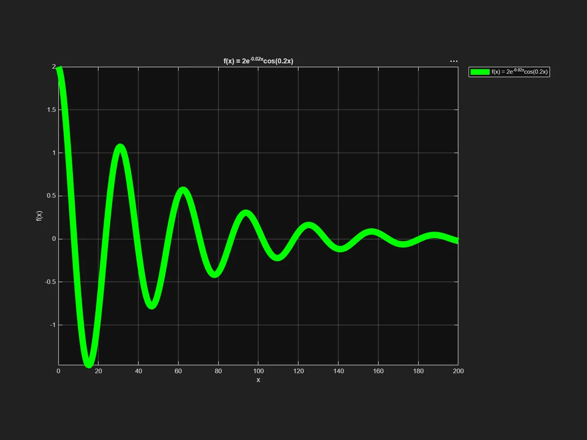
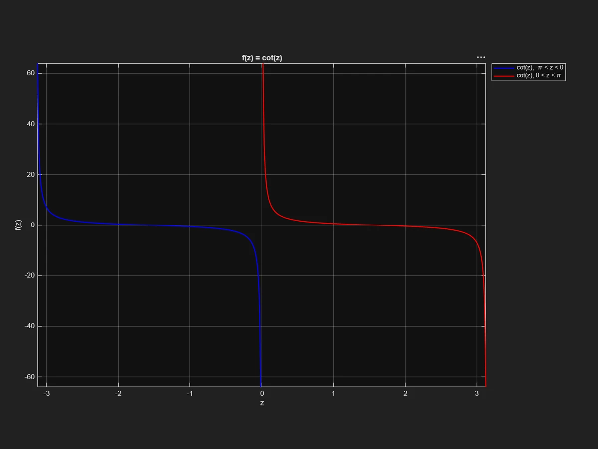
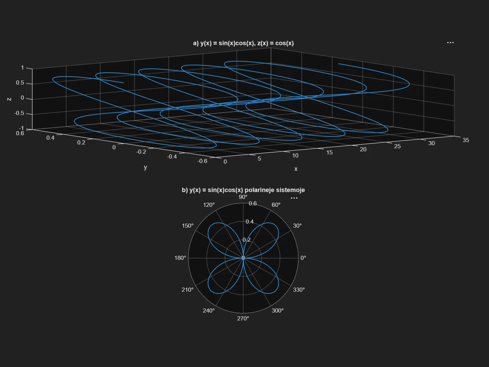
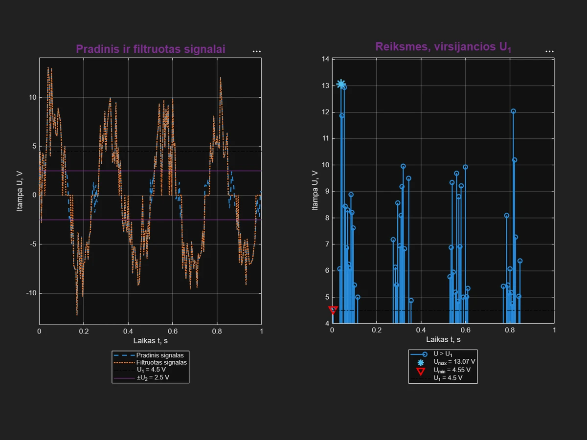
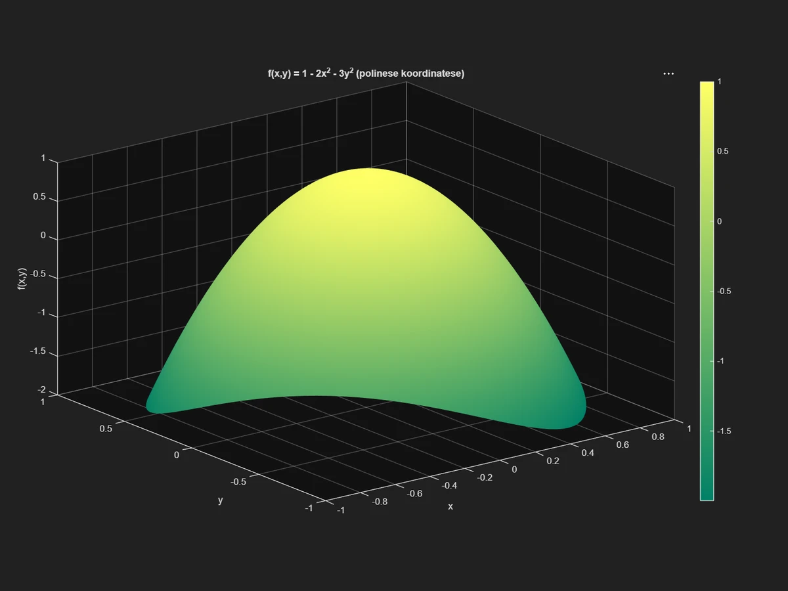
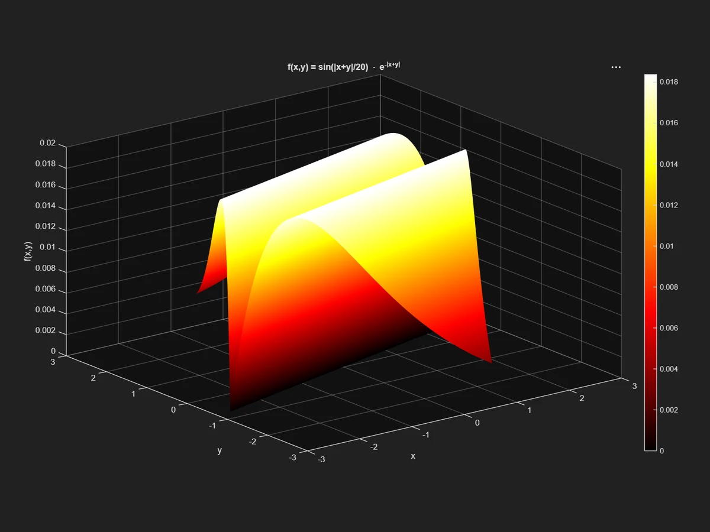
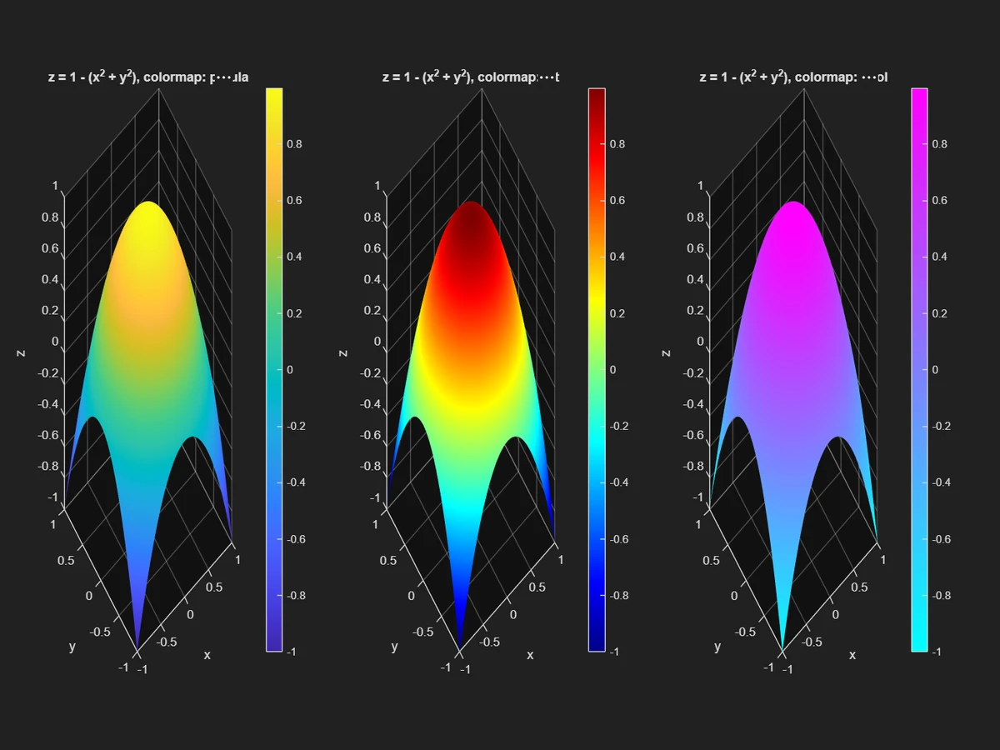

Atlikti darbai
MATLAB laboratorinių darbų grafikai: dvimačiai, specializuoti ir trimačiai funkcijų vaizdai. Paspauskite ant grafiko, kad jį padidintumėte.
- Visi
- 3 LD – 2D ir specializuoti grafikai
- 4 LD – 3D paviršiai


Slopstanti kosinusinė kreivė
3 LD – 2D grafikas
Funkcija f(x) = 2e−0,02xcos(0,2x), 300 taškų intervale [0; 200]. Storos ryškiai žalios linijos grafikas su legenda už ašių ribų.


Kotangento funkcija
3 LD – 2D grafikas
f(z) = cot(z) dviejuose intervaluose be neapibrėžtų taškų −π, 0 ir π. Kiekviena šaka nubraižyta skirtinga spalva.


Trimatė ir polinė kreivės
3 LD – specializuoti grafikai
Trimatė kreivė y = sin(x)cos(x), z = cos(x) su plot3 ir ta pati funkcija polinėje koordinačių sistemoje – keturlapė rožė.


Signalo filtravimas
3 LD – papildoma užduotis
Sinusinis signalas su triukšmu ir jo filtruota versija. Dešinėje – reikšmės, viršijančios U₁, su pažymėtu maksimumu ir minimumu.


Paviršius polinėse koordinatėse
4 LD – 3D paviršius
f(x,y) = 1 − 2x² − 3y², kai x = r·cos θ, y = r·sin θ. Kupolo formos paviršius su „summer“ spalvų palete, pasuktas 45°.


Eksponentinis griovys
4 LD – 3D paviršius
f(x,y) = sin(|x+y|/20)·e−|x+y|, kai x, y ∈ [−2; 2]. Paviršius su „hot“ spalvų palete, pasuktas 60°.


Spalvų palečių palyginimas
4 LD – papildoma užduotis
Tas pats paviršius z = 1 − (x² + y²) trijuose subplot langeliuose su skirtingomis spalvų paletėmis: parula, jet ir cool.